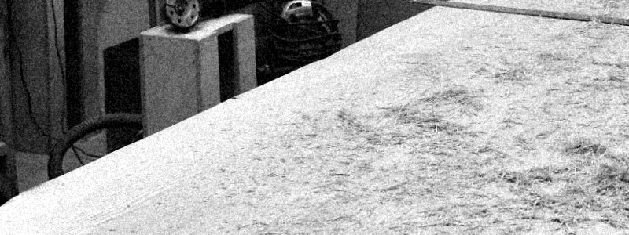
製作者の
視点
仮題 — Working title
タイトルは未確定。今日の議論の対象です。
素材の偶然性から考える、
新たな展示コンセプト
Title candidates — タイトル候補
- 01製作者の視点 ← 仮
- 02製作者による偶然性の意匠
- 03素材の偶然性
- 04偶然性の和
- 05製作者と紐解く素材の造形
製作者の視点（仮） Exhibition Concept
Internal Design Review 02
Background 02 / 11
なぜ、木工場に
立ち返るのか。
出発点 — Origin
廃材を、再利用する。
今回の焦点 — Focus
製作者は、加工の途中で
何を発見しているのか。
200㎡
約200㎡の木工場を、
デザインの源泉として
捉え直す。
※ 200㎡は木工場の規模です。展示会場の面積ではありません。
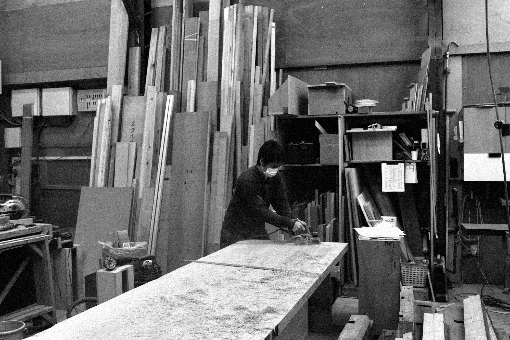
FIG. 01
RESET 木工場。
電気鉋で板を削る。
板の上に鉋屑が
溜まっていく。
製作者の視点（仮） Exhibition Concept
Internal Design Review 03
Concept 03 / 11
製作者だからこそ、
見えるもの。
デザイナーが受け取るのは、完成品。
製作者は、その途中を毎日見ている。
製作者が立ち会う時間
素材を、完成品になる前から見ている。
完成品
多くの人が目にする時点
- 原木LOG
- 製材SAWN
- 切るCUT
- 削るPLANE
- 組むJOIN
- 仕上げFINISH
- 完成品PRODUCT
01
MAKER
製作者
毎日、木に触れている人。
02
MATERIAL
素材
完成品になる前の木。
03
OBSERVATION
観察
切る、削る、組む途中で見る。
04
ACCIDENT
偶然
意図せず現れる形と表情。
製作者の視点（仮） 04
Perspective 04 / 11
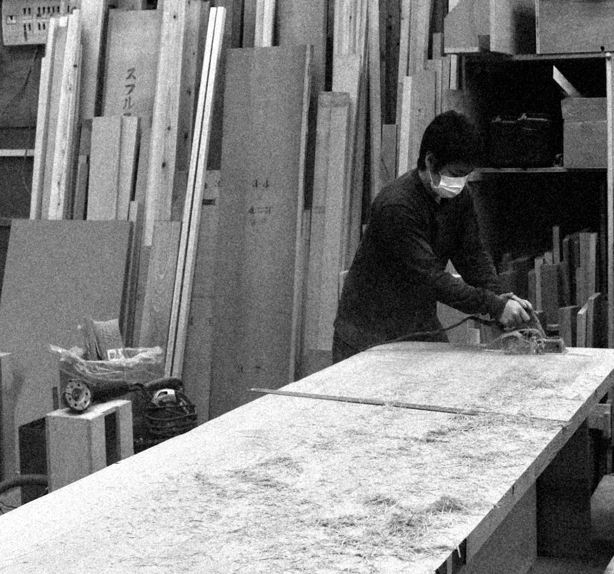
FIG. 02 — 電気鉋で削った直後の板面。鉋屑が散らばり、重なっている。RESET 木工場。
意図しなかった
形が、
発想を生む。
Read as — 読み替える
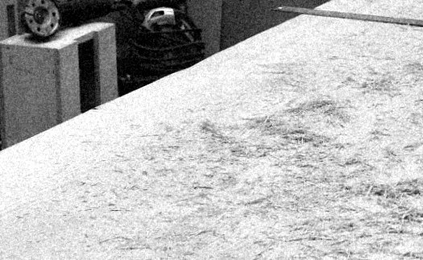
鉋屑の薄さ、重なり
→ 布のような素材？
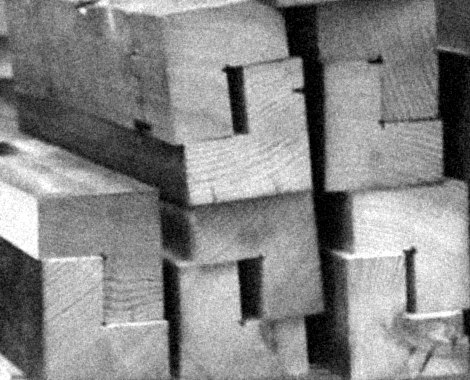
切断面に現れた形
→ 自然界の何か？
製作過程で生まれた形や現象を、
普段とは異なる視点で読み替える。
製作者の視点（仮） Exhibition Concept
Internal Design Review 05
Discovery 05 / 11
日常の中にある、
偶然の造形。
Research archive
工場で毎日生まれている
4つの現象を、
観察対象として記録する。
Photo to come撮影予定：節のある板の表面と断面
01
WOOD KNOTS
木の節
木の節が持つ、
不規則な形。
- SOURCE
- RESET 木工場
- RECORD
- 写真 未撮影
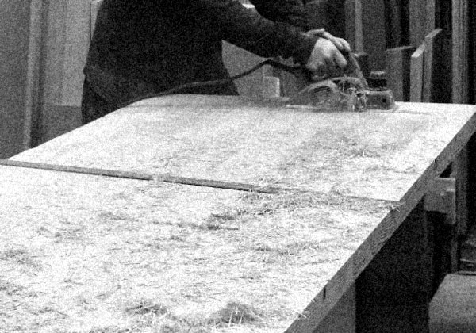
02
WOOD SHAVINGS
鉋屑
薄さ、重なり、
柔軟性、透過性。
- SOURCE
- RESET 木工場
- RECORD
- FIG. 03
Photo to come撮影予定：集塵機の中に堆積した木粉の層
03
WOOD DUST
木粉
集塵機内に堆積する、
地層のような模様。
- SOURCE
- RESET 木工場・集塵機
- RECORD
- 写真 未撮影
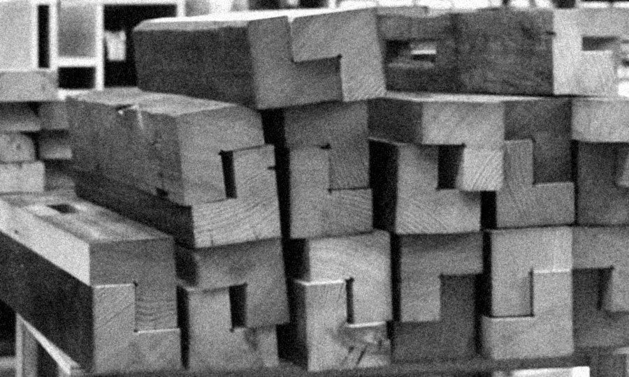
04
OFFCUTS
端材
端材、切断面、加工痕の
固有の造形。
- SOURCE
- RESET 木工場
- RECORD
- FIG. 04
製作者の視点（仮） Exhibition Concept
Internal Design Review 06
Material study 06 / 11
素材は、別のものになれるのか。
Status — 研究・検討段階完成した技術ではありません。ここに並ぶのは、まだ答えのない問いです。
Found — 見つけたもの
Question — 問い
Possibility — まだ存在しないもの
Q1 — 鉋屑
鉋屑は、
テキスタイルになるのか。
→
?テキスタイル
未検証
未検証
Photo to come集塵機内の木粉の堆積
Q2 — 木粉
木粉の堆積は、
造形物として固定できるのか。
→
?固定された造形物
未検証
未検証
Photo to come木の節のクローズアップ
Q3 — 木の節
木の節から、
新しい家具の形を考えられるのか。
→
?家具の形
未検証
未検証
製作者の視点（仮） Exhibition Concept
Internal Design Review 07
Design process 07 / 11
偶然から、意図あるデザインへ。
01発見意図せず生まれた形に気づく。
DISCOVERY
02観察見つめ、切り取り、記録する。
OBSERVATION
03解釈何に見えるか、何に使えるか。意味を見つける。
INTERPRETATION
04意匠形を整え、構造と用途を考える。
DESIGN
偶然生まれた形を、そのまま製品にはしない。
製作者の観察と解釈を経て、はじめてデザインになる。
01 — そのままの写真
02 — 切り取り、拡大する
03 — 抽象化する
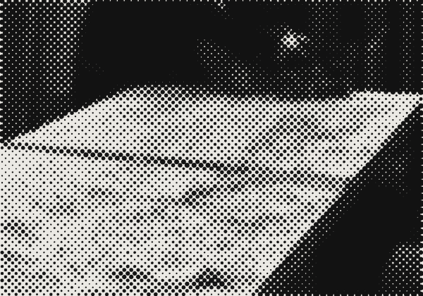
04 — 形の仮説（未定）
製作者の視点（仮） Exhibition Concept
Internal Design Review 08
Design direction 08 / 11
何を、どのような形に
できるだろう。
Hypotheses — 仮説
書かれているのは仮説。
空欄は、これから
埋める場所。
MATERIAL
素材 × 展開先
FURNITURE
家具
LIGHTING
照明
PANEL
パネル
OBJECT
オブジェクト
?
その他の可能性
節
01 WOOD KNOTS
節の輪郭を、
天板の形に？
節の抜けから、
光を通す？
鉋屑
02 WOOD SHAVINGS
薄さと透過性を、
シェードに？
重ねて吊るす、
間仕切りに？
木粉
03 WOOD DUST
堆積の層を、
座面に見せる？
地層のような
塊として固定？
端材
04 OFFCUTS
切断面を並べた
面材に？
加工痕を、
標本のように？
製作者の視点（仮） Exhibition Concept
Internal Design Review 09
Venue 09 / 11
どこで、
展示するか。
Venue — 仮選定
The Lab Studio 3
other circle が行われる The Lab（コペンハーゲン）
会場の特徴
- 白く塗られたスタジオが並ぶ
- 窓からコペンハーゲンの街並みが見える部屋
- 天窓だけの部屋も多い
その中で、最もオーソドックスな
Studio 3 を仮に選んだ。
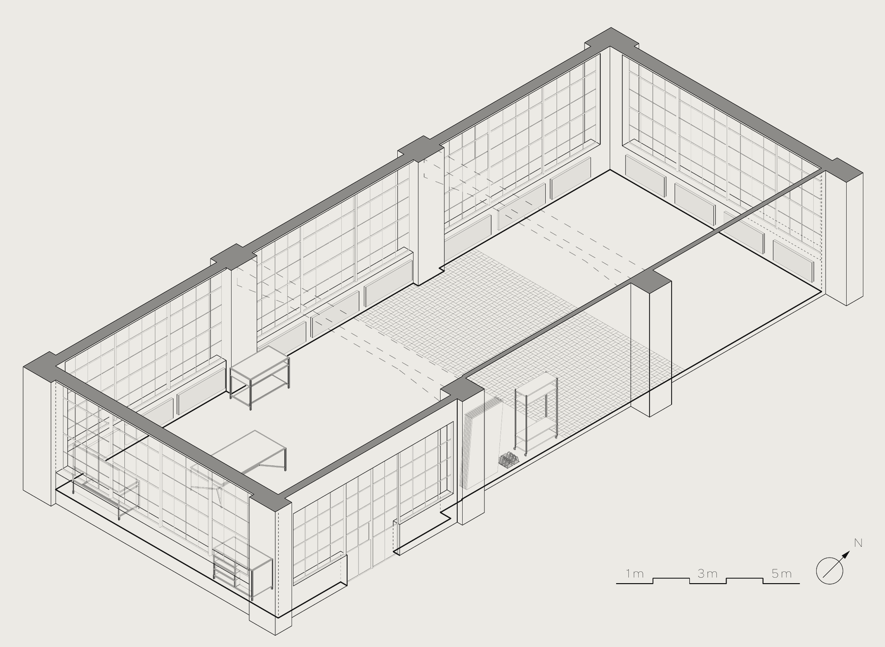
FIG. 05 — The Lab Studio 3 アイソメ図。図面・寸法・仕様は会場資料（2023年3月）による。
Area
178 ㎡
Ceiling
3.70–4.00 m
Windows
NW · SW · SE
Floor
コンクリート
赤レンガ
Door
W 1.97 m
H 3.40 m
製作者の視点（仮） Exhibition Concept
Internal Design Review 10
Exhibition direction 10 / 11
発見のプロセスを、
どう展示するか。
Layout — 空間の考え方
リビングを広げたようなレイアウト。
でも、どこか日常的でないオブジェの雰囲気。
肩の力を抜いて、座る・触る・ゆっくり過ごす。
展示するもの — 参考アイデア（確定案ではありません）
家具の完成形だけでなく、発見から造形までの過程を見せる。
- A素材サンプルと、完成作品の関係
- B工場での製作過程を記録した写真
- C実験途中の素材や試作品
- D製作者による観察やスケッチ
- E作品と素材研究が共存する展示空間
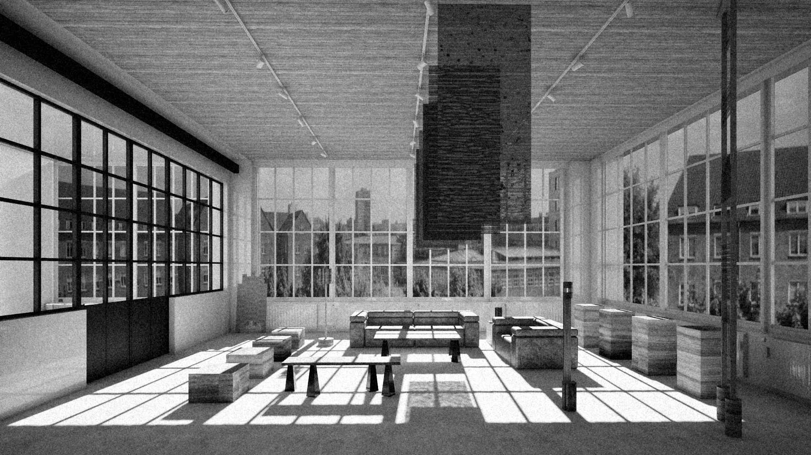
FIG. 06 — 検討用パース（RESET）。Studio 3 を想定したレイアウトの一案であり、確定した展示計画ではありません。
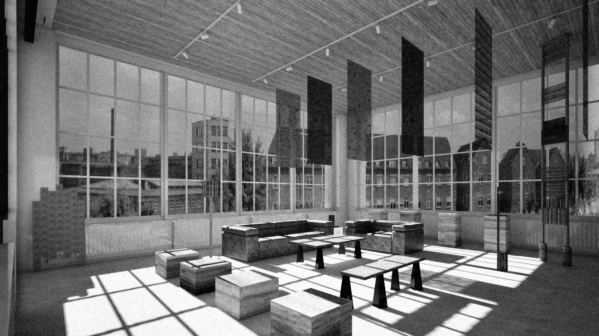
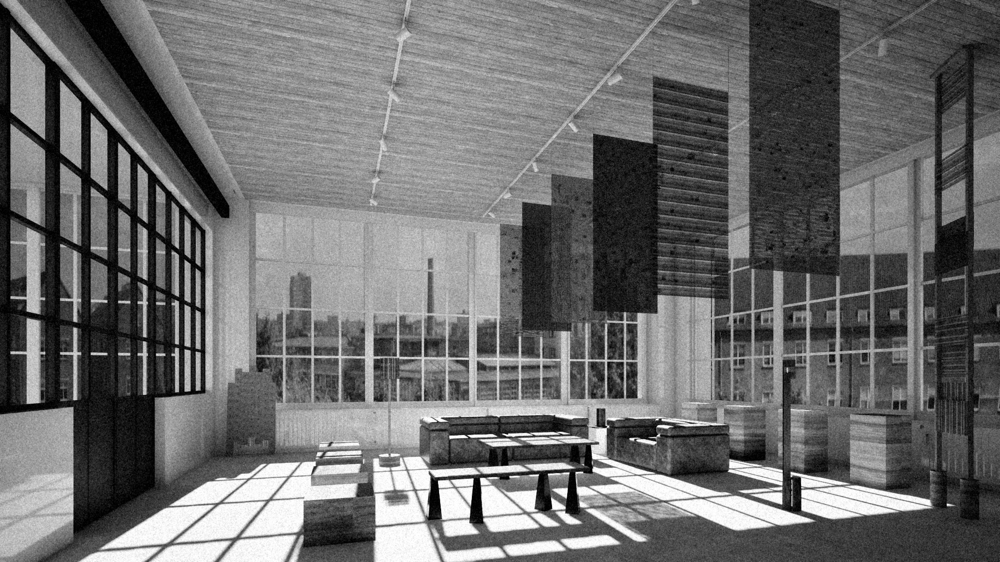
FIG. 07 — 検討用パース
FIG. 08 — 検討用パース
Open空間演出は、このチームで議論して決める。
製作者の視点（仮） Exhibition Concept
Internal Design Review 11
Discussion 11 / 11
私たちは、何を発見できるだろう。
- Q1どの素材の現象に、最もデザインの可能性を感じるか。
- Q2偶然の発見を、どのように造形へ展開できるか。
- Q3製作者の視点を、展示空間でどう伝えるか。
- Q4家具、素材、実験の関係を、どう表現するか。
- Q5今回のコンセプトに、足りない視点は何か。
- Q6あなたの問い
偶然生まれたものを、
意図あるデザインへ。
→ ここから、ディスカッションへ。